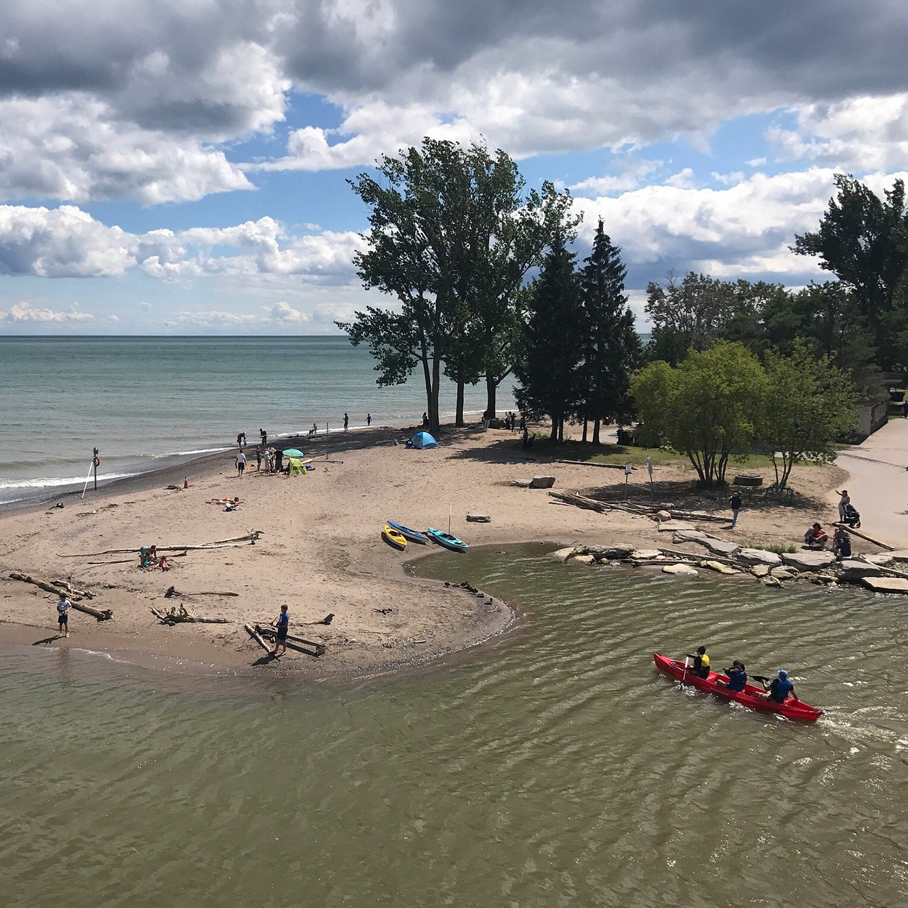

Biking

One of the best sections of the Waterfront Trail, this route traverses the east side of Toronto, from the far end of Scarborough and into Pickering.
This 9 km scenic, paved Park trail has serene views of Lake Ontario and crosses over both Highland Creek and the Rouge River.
Learn More
The landscape is ever-changing, and although the elevation is mainly flat at the lake, it does rise over the bluffs and while crossing bridges. Well-marked, it is for good reason a popular and busy route.- Length – 9 km (one way) 80% park path 20% road crossings, detours
- Elevation – flat along waters edge, a few short hills over bluffs, bridges
- Terrain – paved, some gravel and sand, bridges
- Skill – all levels
- Facilities – parking, toilets at Rouge River, snack bar, benches, picnic tables, rain shelter
Kayaking
Discover Rouge River kayaking and the soft sandy beaches of the Rouge River. Multiple non-guided kayak, paddleboard and canoeing trips. There are several great swimming spots (most beaches are public land), and you can bring your lunch and have a picnic on the shore of the river.
Learn More
The Rouge river is CALM and most parts are very shallow. Our 24 km (full day), 12 km (half day) or 6km (2hr) section of river is in a rural setting. A few clubs like Pickering Rouge Kayaking Club includes a canoe, kayak, or paddleboard (SUP) rental and up river transport.Staff will provide you with the equipment, help you launch and give you some basic instructions.
Camping
Glen Rouge Campground,located at 7540 Kingston Road, this is Toronto’s only campground. Here you will have access to hiking trails and sandy beaches, children’s playground, showers, washrooms and laundry facilities. BBQ and fire pits are also available. Leashed dogs are permitted.
Learn More
The Campground is staffed 24 hours a day, 7 days a week during the season. Camping season runs from May to October. Reservations are accepted as early as January

Leave Your Comments !
BinKris
Jul 2019 • Family
Hidden gem
Didn’t expect the calmness of it. If you want to spend time with family in a quiet but wonderful beach, this is the place to be in. Loved it.
Dynamite2805
Aug 2017 • Friends
Beautiful Park & Beach
As you enter, you can see the marsh boardwalk and a walking bridge to the left of the park. People were busy fishing, walking, biking and swimming as well. Family & pet friendly place too.
Sonam
Jul 2018 • Couples
Sandy beach üèñ & clean water
We always go to Rouge beach once a week sometimes twice a week too. It has a clean water on shore side with sandy beach & perfect spot to view entire Lake Ontario. There’s trails on the side - Rouge National Urban Park. Fishing, kayaking, boating on the Rouge river. Free parking, washroom on the site. GO station & TTC bus near by(Lawrence East).